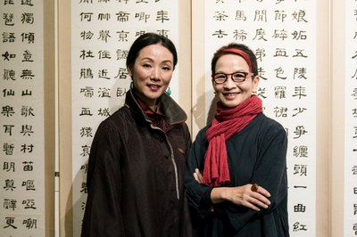

百鳥歸巢入翟山
心心南管樂坊【入圍理由】一灣坑道、一帶碧水，一聲悠揚的竹笛穿透濕潤微涼的空氣，清亮遼遠。遠方洞口光亮處，一排竹筏破水而來，素服淡妝的樂人們安坐其上，端莊典雅，如天上飄落之仙人。竹排上，南管藝術家王心心絲弦輕撩、竹板輕罄、朱唇輕啓，一闕詩仙的《早發白帝城》，一曲古早的《百鳥歸巢》，瞬間即讓岸上凝神屏息的觀眾，不知有漢，無論魏晉也。 這是心心南管樂坊在原金門軍事重地之翟山坑道中演出的畫面。導演吳素君巧妙地將裝置、實景與活化石之南管做一結合。“毋忘在莒”的標語下的坑道裡，這實景表演在某種意義上更像是行為藝術。輕舟已過的，不僅是萬水千山，更是那千百年不堪回首的戰火離亂之歷史時空。 心心南管樂坊以溫婉沉定的力量，打破了表演的框架與疆界，跨越了藝術的形式與格局，並傳遞出穿透歷史時空的情懷與悲憫。 (主筆／張曉雄)
心心南管樂坊作為南管演出、創作、傳承的表演藝術團體，除持續強化南管音律、合奏等本體音樂旋律之美，更期望藉由演出內容與場地、氛圍的統合規劃，彰顯這項有形文化財的當代價值，讓更多民眾得以感受南管之豐美。 南管原屬民間廳堂音樂，最常出現在閩南傳統院落、廟宇裡，並以其溫婉的唱詞、沉靜的旋律走過台灣四百年；在2009年以其最原始的狀態，獲選為世界非物質文化遺產。近年在有心的學者、藝術家及演奏家努力下，南管走進藝術殿堂，結合各項劇場元素，展現出新的樣貌！期望透過創新企畫，結合南管與金門傳統閩南建築，作一次完整的演出及講座規畫，展現物質與非物質文化遺產相融加分的效果。
關於人物
「心心南管樂坊」連續四年受邀於金門「翟山坑道」演出，當南管音樂流淌在人工開鑿的翟山坑道，清麗悠遠的天然音響與金門閩南文化的溫厚相融，讓觀眾留下深刻印象，累積一群忠實樂迷。2016年，「心心南管樂坊」邀約兩岸傑出樂人共演，為金門遺存的戰地史蹟、傳統聚落注入人文色彩，使金門成為兩岸文化藝術交流新據點，也凸顯翟山坑道於現今和平交流的時代意義。
2012年，金門國家公園管理處邀約場勘，藝術總監王心心和總導演吳素君一看坑道，讚嘆此地和南管音樂是天作之合，「馬蹄形坑道完美的迴音效果跟坑外『毋忘在莒』四個大字搭配起來，太妙了，南管在這演一定很適合」吳素君笑說，「就是天時地利人和」。金門鳥種繁多，樂坊特選《百鳥歸巢》做為演出主題，演奏時眾鳥齊奏，一時難辨是人造或天然鳥鳴。坑道原做戰備用，在此演出亦隱含兩岸和平意味，且金門傳統建築與泉州建築神似，以泉州鄉音吟唱的南管樂音，飄盪在建物之間更添歷史風情。坑裡有條水道，演出時觀眾沿岸站開、表演者乘竹筏由遠划近，加上觀眾中也安排了表演者；每首歌聲響效果從四面八方傳來，各具奇趣；聽覺引領視覺、營造夢境般的幻覺場域，從演出曲目到呈現方式都配合場地精心編排，吳素君說「有場演出，竹筏剛停，王心心正要開口唱，一滴水碰巧從她額前滴落，太美了！想要在舞台重現這番場景幾乎不可能」。
坑道演出難處亦多，因潮濕導致悶音或坑道內外溫差，種種惡劣條件除了團隊精準執行力，金門國家公園管理處的大力協助也居功厥偉，「從前期的觀眾報名、將觀眾分批帶入坑道、提供觀眾接駁用的遊覽車並由專業導遊於車上發放節目單、解說觀賞須知，有秩序又有效率」吳素君回憶為了熟悉場地、團隊在閩南式老屋改建的民宿住了好幾天，每日在建築廳堂中練習，最後甚至在原定的坑道演出之外，加開了聚落建築的環境演出。
這樣的演出型態，王心心其實並不陌生，南管本就源於民間，早期台灣不把南管看作表演藝術，而是尋常民間的生活環節。「以前良家子弟學南管是為了以樂會友，玩票性質的業餘切磋；傳統南管樂人從沒想過南管能搬上舞臺，甚至反對賣票」南管很貼近生活，一奏就是一天，樂曲不間斷。王心心認為南管像麻將，絲竹管弦陰陽互補，四人到齊才能玩，「我到台灣後，常常湊不齊四人練習，更多時候獨自在家練，慢慢體悟也許人少點也行，但得要求自己技術更精進才對得起觀眾」。王心心認為南管是世界性的音樂藝術，每當和不同藝術家合作都感到南管的空間寬廣，藉由舞台化讓南管有機會被更多人看到、讓更多人感動，這是心心南管樂坊把南管舞台化的原因。
從民間藝術轉上舞台表演，導演吳素君是關鍵人物之一。身為雲門舞集創團舞者，她曾登上世界各地大大小小舞臺，回到自家卻對南管一見傾心，「1994年我在漢唐樂府看王心心演出，這麼美的藝術，這麼棒的藝術家，能怎麼幫南管提升到另一層次？」吳素君提煉傳統元素做出了《艷歌行》，安靜典雅的南管絲竹室內樂，搭配梨園戲的細微表演動作，在勾欄院連演數十場，最終出國巡演，造成轟動，「南管和梨園戲兩樣都是傳統，但把兩者結合絕對是創新」。吳素君認為，出生泉州南管世家又自幼習藝，唱奏譜曲樣樣精通的王心心，幾乎就等於南管藝術，「在她身上無論多創新的東西都不會脫離傳統，骨架始終在那」。吳素君和王心心「舞臺年齡」相加近百年，始終為南管的舞台藝術努力耕耘；也因為尊崇南管，更是盡力為南管拓展未來更多可能性，「只要還有觀眾喜歡，無論得獎與否，我們都會繼續往前走」。
心心南管樂坊
創辦人王心心成長於福建泉州的南管世家，長年累積的藝術素養及演出功力，堪稱閩南南管最純正的代表；但王心心不固守舊局，在深厚的專業上追求藝術突破，從曲風的實驗、題材的擴張、到燈光舞台的現代設計，每年都讓南管演出有令人意想不到的風貌。自03年以來，《琵琶行》、《葬花吟》、《聲聲慢》等一系列南管詩系列的創作，結合唐詩宋詞的南管曲韻，更將南管從民間音樂體系提昇到人文音樂的層次。03年，王心心創立心心南管樂坊，除了致力恢復清音雅樂的傳統，也嘗試讓南管在當代社會呈現嶄新面貌。曾合作的藝術家包括林懷民、羅曼菲、吳素君、簡文彬及游麗玉。10年首度嘗試跨國合作，與法國歌劇導演盧卡斯．漢柏斯合作創新南管歌劇《羽》。「心心南管樂坊」在跨界的同時不忘本質，精湛的唱功，結合台灣劇場精英的專業演出，呈現南管最精粹完美的一面，更期許能因此激發國人對在地文化的思考及傳統藝術的興趣。
作品相關評論
製作團隊：
委託製作單位｜金門國家公園管理處
製作單位｜心心南管樂坊
演出單位｜心心南管樂坊、 東山御樂軒南音社、 廈門市錦華閣南樂社
藝術總監│王心心
導 演│吳素君
服裝設計│鄭惠中
樂者│王心心、李寶霞、丁玉經、陳雪軒、楊桔平、林志勇、張福祿 、康碧容、施恆德、葉台竹、楊秀敏、陳藝玲、陳迎紅、朱玉愛、陳桂心
活動紀錄│台灣土狗文創工作室
平面設計│張思惟
劇照攝影│劉慶隆
執行製作│黃晏容